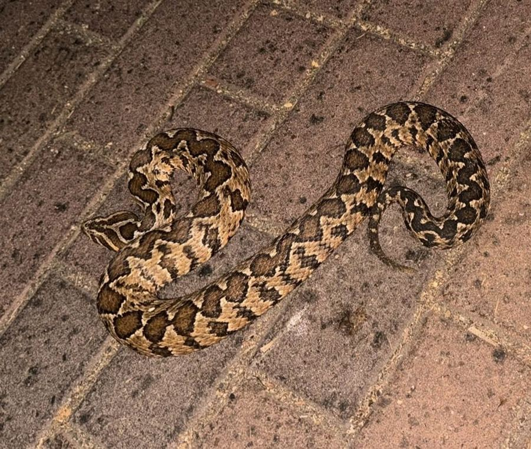
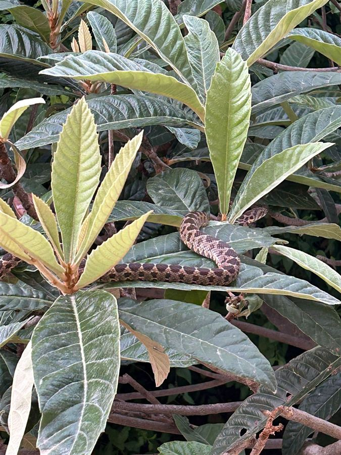
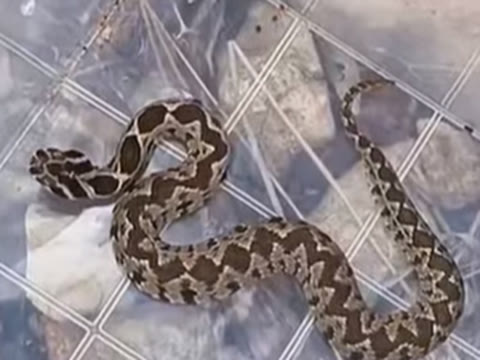

צפע או זעמן? 🐍
שני נחשים עם דוגמה דומה שמתבלבלים ביניהם בגינות ובשבילים בארץ. הראשון ארסי, השני לא. הנה איך מבדילים, עם תמונות מהשטח.
בטיחות קודם: לא מתקרבים ולא תופסים נחש, גם אם נראה לכם שזה "סתם זעמן". תמונה ממרחק עדיפה על זיהוי מקרוב.
נחש בתוך הבית או בגינה: מזמינים מוציא נחשים מורשה, או פונים לרשות הטבע והגנים (*3639).
נשיכה: מתרחקים, מקבעים את האיבר ומתקשרים למד"א (101). הדף הזה הוא עזר לימודי ולא תחליף לזיהוי של מומחה.
איך מבדילים
צפע ארץ-ישראלי Daboia palaestinae · ארסי

- ראש משולש ורחב, מובחן היטב מהצוואר.
- גוף עבה וקצר, זנב קצר שנגמר בחדות.
- דוגמת זיגזג כהה לאורך הגב, בלוטים שמתחברים זה לזה.
- אישון אנכי (כמו של חתול), וקשקשים מחוספסים עם רכס באמצע.
זעמן Coin-marked snake · Hemorrhois nummifer · לא מסוכן לאדם

- ראש צר ומוארך, כמעט באותו רוחב של הצוואר.
- גוף דק וארוך יותר וזנב ארוך ודק.
- כתמים עגולים או מרובעים ("מטבעות") בשורות, לא זיגזג רציף.
- אישון עגול, עיניים גדולות, קשקשים חלקים יותר. נוטה לברוח מהר.
בטבלה
| צפע | זעמן | |
|---|---|---|
| ראש |  משולש, רחב מהצוואר משולש, רחב מהצוואר |
 מוארך, צר מוארך, צר |
| גוף |  עבה וקצר עבה וקצר |
 דק וארוך דק וארוך |
| זנב |  קצר קצר |
 ארוך ודק ארוך ודק |
| דוגמה |  זיגזג רציף לאורך הגב זיגזג רציף לאורך הגב |
 כתמים עגולים/מרובעים בשורות כתמים עגולים/מרובעים בשורות |
| אישון |  אנכי אנכי |  עגול עגול |
| צעיר |  קטן יותר, אבל אותו דפוס כהה | — |
| התנהגות | נשאר במקום, מתכווץ ומשמיע שריקה | בורח במהירות |
תמונת האישון של הצפע: ארבל לוי, CC BY-SA 4.0 (חיתוך מהתמונה המקורית). שאר התמונות בטבלה: זהר להט.
שימו לב: צעירים של שניהם קשים יותר לזיהוי, ותמונה מרחוק או בתאורה גרועה מטעה. מי שלא בטוח, מתייחס לנחש כאל צפע.
חידון: צפע או זעמן?
10 שאלות מתמונות וסרטונים, עם הסבר אחרי כל תשובה.